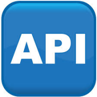
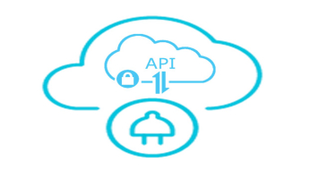
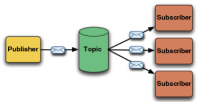

Web Services Development
All slides's in Module
Web Services
JavaScript
ECMA2015
Git Overview
Node
APIs

API Value

MongoDB and Mongoose
# Indirect Messaging

# Microservices
# Microservices - Further Reading
# Testing Web APIs